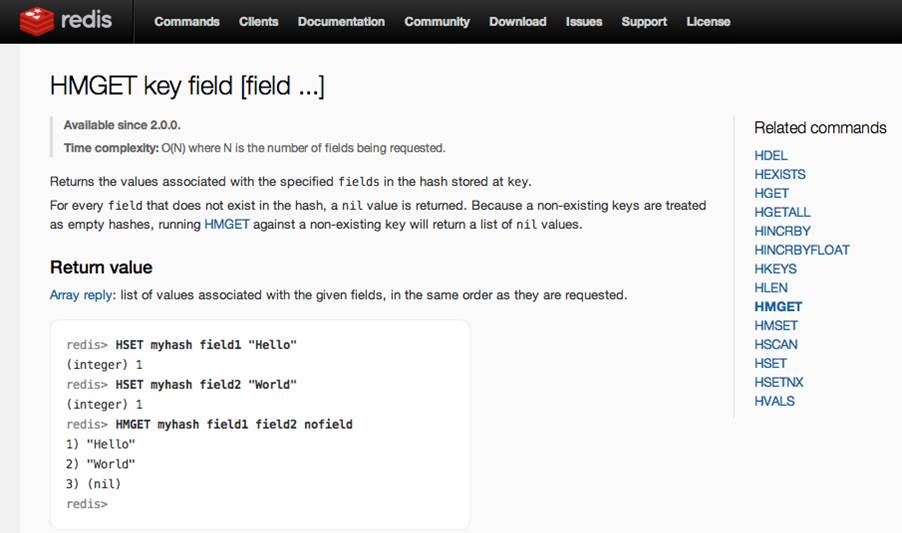

Devoxx France 2017
L’enfer de l’objet Date JS
Bounkong Khamphousone @tibounk
Presentation
Développeur Java/JEE
Data Engineer
Problème

Qu'est-ce que Date ?
Epoch
Gestion des timezones
| Zone | Heure | Décalage |
|---|---|---|
| New-York | ||
| Londres | ||
| Paris | ||
| Inde |
Devoxx FR 2017 colors
Live color chart here
https://color.adobe.com/fr/DEvoxx-FR-2017-v3-color-theme-9311745/?
Show me some code !
Try to keep a font size as big as possible. Remember also that too much code on one slide is useless. The audience reads this texte and does not listen to your presentation anymore. Try to split on different slides your presentation.
Step 1 : add to Redis sorted set
127.0.0.1:6363[2]> zadd hackers 1953 "Richard Stallman"
(integer) 1
127.0.0.1:6363[2]>
127.0.0.1:6363[2]> zadd hackers 1969 "Linus"
(integer) 1
127.0.0.1:6363[2]> zadd hackers 1912 "Alan turing"
(integer) 1Step 2 : Show the list of Hackers
127.0.0.1:6363[2]> zadd hackers 1953 "Richard Stallman"
(integer) 1
127.0.0.1:6363[2]>
127.0.0.1:6363[2]> zadd hackers 1969 "Linus"
(integer) 1
127.0.0.1:6363[2]> zadd hackers 1912 "Alan turing"
(integer) 1
127.0.0.1:6363[2]> zrange hackers 0 -1
1) "Alan turing"
2) "Richard Stallman"
3) "Linus"Step 3 : Show the list with score
127.0.0.1:6363[2]> zadd hackers 1953 "Richard Stallman"
(integer) 1
127.0.0.1:6363[2]>
127.0.0.1:6363[2]> zadd hackers 1969 "Linus"
(integer) 1
127.0.0.1:6363[2]> zadd hackers 1912 "Alan turing"
(integer) 1
127.0.0.1:6363[2]> zrange hackers 0 -1
1) "Alan turing"
2) "Richard Stallman"
3) "Linus"
127.0.0.1:6363[2]> zrange hackers 0 -1 withscores
1) "Alan turing"
2) "1912"
3) "Richard Stallman"
4) "1953"
5) "Linus"
6) "1969"Step 4 : Last step with transparent code
127.0.0.1:6363[2]> zadd hackers 1953 "Richard Stallman"
(integer) 1
127.0.0.1:6363[2]>
127.0.0.1:6363[2]> zadd hackers 1969 "Linus"
(integer) 1
127.0.0.1:6363[2]> zadd hackers 1912 "Alan turing"
(integer) 1
127.0.0.1:6363[2]> zrange hackers 0 -1
1) "Alan turing"
2) "Richard Stallman"
3) "Linus"
127.0.0.1:6363[2]> zrange hackers 0 -1 withscores
1) "Alan turing"
2) "1912"
3) "Richard Stallman"
4) "1953"
5) "Linus"
6) "1969"
127.0.0.1:6363[2]> zrangebyscore hackers 1910 1940
1) "Alan turing"Live demo
Merci / Thanks you
Facts
Devoxx France 2017
221 speakers with a bagde, 40 exhibitors
and more than 2800 attendees

Less code is less bug
Why less slides is better than more slides
- Devoxx France runs on 3 days
- Audience loves live coding and demo
- Too much bullet points is super boring
- More text : less concentration from the audience that will just read your slides
- So this is exactly what you should not do
Pourquoi peu de diapositives c’est mieux
- Devoxx France se déroule sur 3 jours
- Le public préfère les démonstrations et l’écriture de code en direct
- Trop de points avec des puces c’est ennuyant
- Si vos slides peuvent vous remplacer, alors vous ne servez à rien comme orateur
- Imaginez que votre ensemble de diapos ne doivent pas pouvoir vivre sans vous, sans votre présentation et votre contenu
- Merci donc de ne PAS faire comme ce slide à mourir
Toujours plus d'image
- Les diagrammes dynamiques c’est vraiment top
Redis Set
TODO
Redis Set : French Selected Speakers
TODO
Screen capture
- Here are just a few photos from Devoxx France 2015 so that you get a better idea of what you’re about to live
- Voici quelques photos de Devoxx France 2016 afin de vous donner une idée de ce que vous vous apprêtez à vivre...
Thanks
Contribute and propose other templates on https://bitbucket.org/nicolas_martignole/devoxxfr_templates/overview
#DevoxxFR